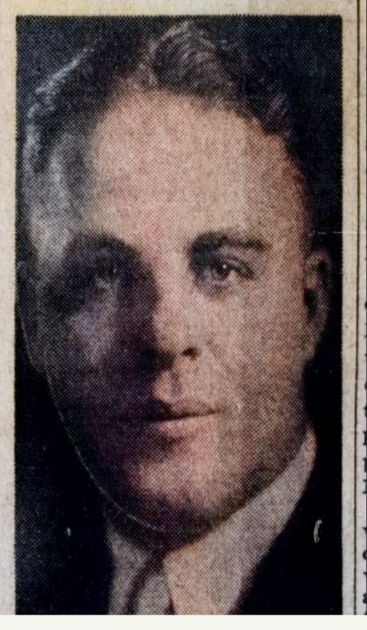
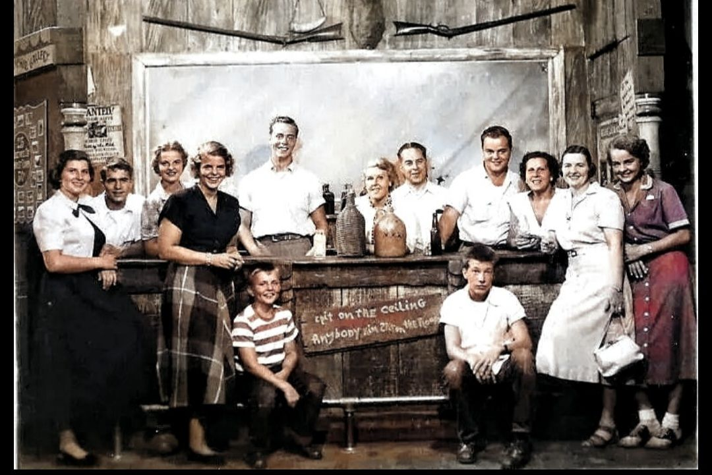
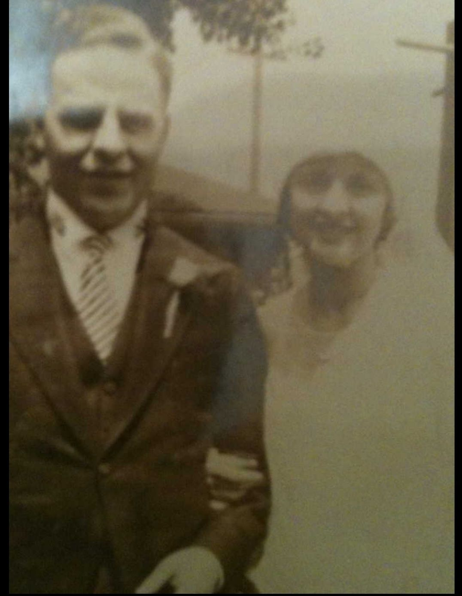
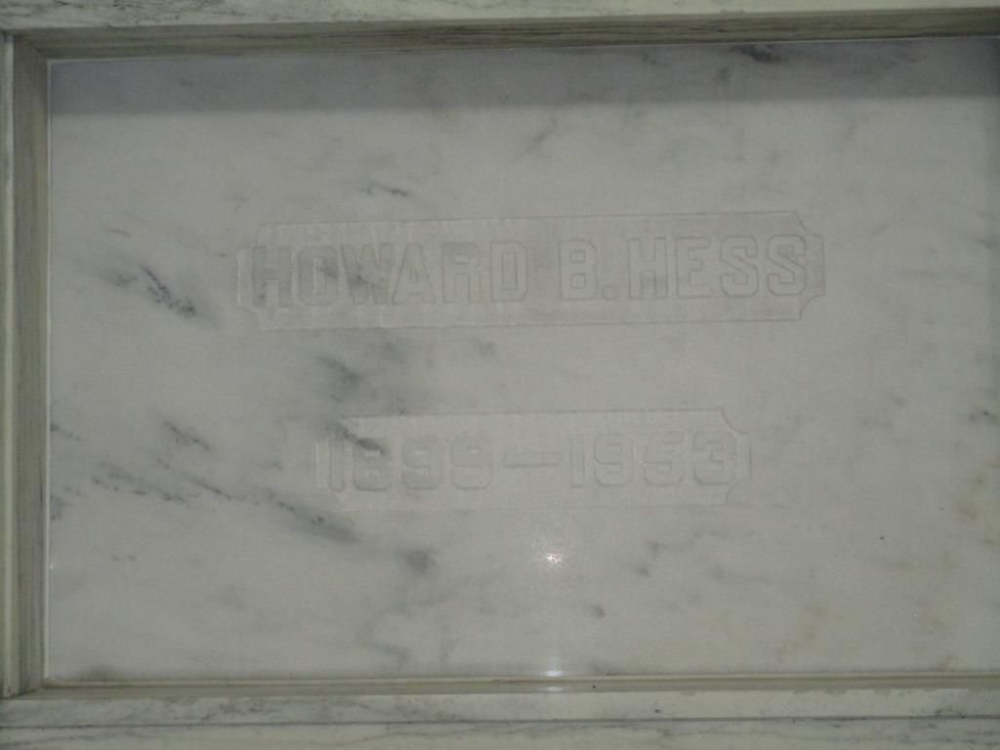
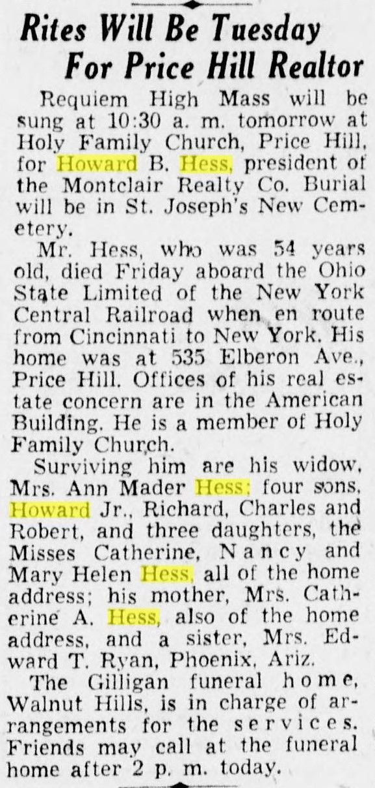
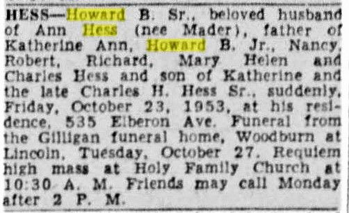
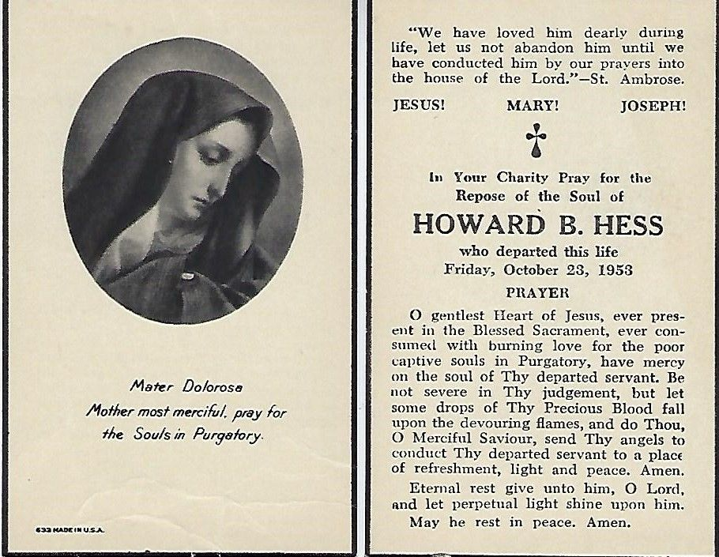
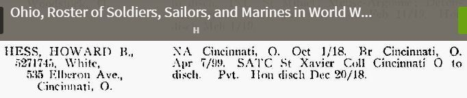

Howard Bernard Hess
10 April 1899 – 23 October 1953
Quick Facts
Immediate Family
Parents
- Charles H. Hess (1869–1923)
- Katherine A. Hess (1877–1967; maiden-name conflict unresolved: Winterhalter/Winterholter vs Wiedmer)
Spouses
- Anne Elizabeth (Mader) Hess (married 1928)
Children
- John Richard Hess Sr. (1935–1986)
- Katherine Hess Brady (1929–2002)
- Howard B. Hess Jr. (1930–1967)
- Nancy Jane Hess Herbert (1932–2017)
- Robert Charles / Herbert Robert Charles Hess (1933–2018; given-name order varies)
- Mary Helen Hess Pratt (1937–2012)
- Charles H. Hess (1941–2002)
Siblings
- Marguerite A. Hess (later Dorger; 1898–1951)
- Charles H. Hess Jr. (1902–1938)
- Catherine Hess (later Ryan; 1908–1967)
Family Relationship Notes
Howard’s father is identified as Charles H. Hess by Charles’s 1923 obituary naming son Howard and the family-linked memorials. Howard’s mother is referred to as “Mrs. Catherine A. Hess” in Howard’s 1953 obituary. Charles’s notices call his wife Katherine (née Winterholter), while the 1967 notice for her says Katherine A. (née Wiedmer). The woman is likely the same spouse/mother, but the maiden-name and parentage conflict is unresolved.
The 1953 obituary transcriptions enumerate seven children; names have variants across the notice and memorial family links. “Herbert Robert Charles” versus “Robert Charles,” and “Richard” versus John Richard, are retained as source discrepancies. The separate Charles H. Hess Jr. (1902–1938) is Howard’s sibling, not his son Charles H. (1941–2002).
Howard’s three siblings are supported by Charles’s obituary and Katherine’s 1967 notice, with memorial-linked identities as shown. No sibling profiles were created.
On Family Tree Sites
No family-tree site links are listed.
Person Archive
Life Timeline
10 April 1899 · Birth · age 0
Find a Grave reports his birth in Cincinnati, Hamilton County, Ohio. The original birth record has not been reviewed.
1928 · Marriage to Anne Elizabeth Mader · about age 28–29
Find a Grave reports the marriage year. The original marriage record and exact date have not been located.
1935 · Son John Richard born · about age 35–36
Find a Grave gives John’s birth year as 1935. A secondary transcription of John’s 1950 Social Security application names Howard B. Hess as his father and Ann E. Mader as his mother; the original application has not been examined.
23 October 1953 · Death · age 54
Find a Grave reports his death in Cleveland, Cuyahoga County, Ohio, and burial at Saint Joseph New Cemetery in Cincinnati.
Life Story
Howard Bernard Hess was born in Cincinnati in 1899 and died in Cleveland in 1953, according to his Find a Grave memorial. That memorial identifies his wife as Anne Elizabeth Mader, gives their marriage year as 1928, and lists John Richard Hess among their children. A transcription of John’s 1950 Social Security application names Howard B. Hess as John’s father and Ann E. Mader as his mother. The underlying application has not been examined directly here.
Photo Gallery








Sources and Evidence
- Find a Grave memorial 188866554: dates, burial, spouse and family links; derivative memorial.
- Howard memorial photo gallery: portrait, family wedding caption, 1953 newspaper notices, memorial card, and a roster lead.
- Charles H. Hess memorial photo gallery: 1923 notice identifies Howard as a son; derivative transcript.
- Katherine A. Hess memorial photo gallery: 1967 notice identifies Howard as a son and records alternate maiden-name form Wiedmer.
- John Richard Hess memorial 86978469: links Howard and Anne as parents; secondary memorial.
Research Notes and Open Questions
- Original birth, marriage, census, death, and funeral records have not been reviewed. Parent links are supported by newspaper transcriptions and contributor memorials; distinguish that evidence from original vital records.
- Mother’s maiden name is conflicted: Winterhalter/Winterholter vs Wiedmer; leave unresolved.
- Children count in the 1953 obituary agrees at seven, but individual names and dates vary across the obituary transcript and memorial pages. Preserve variants in archive notes.
- Find a Grave’s roster image for Howard R. Hess at 535 Elberon/Filberon Ave. gives a different middle initial and birth date than Howard B. Hess. It is an unverified identity lead, not evidence of military service.
- Research notes, downloaded source images, and citations are preserved in this GitHub person archive.
DNA
No DNA matches linked yet.
Family Notes
Research notes and source files are in Howard’s GitHub archive.